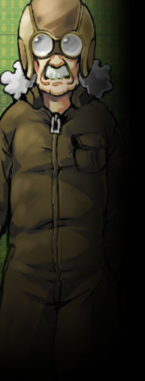

▼職人組合【 モーターソグニル 】 中層に限らず、各層を繋ぐエレベーターの常時点検をはじめ、 ユグドラシル全体のメンテナンスを行う職人組合。 オルレアンの管轄組織ではあるが、長い歴史を持つ職人組合は独自の力関係があると言える。 職人長が複数おり、個人で動く者もいれば、 大人数のチームとなって活動している者もいる。 代を重ねユグドラシルの維持に貢献。 建設・整備・修理といった面で、 ユグドラシルという巨大な建築物は彼らに支えられていると言っても過言ではない。 職人気質で頑固なメンバーも多いが、寡黙な彼らの信頼は３層に渡って厚い。 現在は中層管理局スヴァリンを拠点とし、日夜忙しく働いている。  グリンピース＝ヒースメイル 男性 60歳 能力タイプ エスパー 能力名 ノスタルジックエレベーター モーターソグニル職人長の一人。現役の職人。 天然パーマの長髪白髪。作業用メットと作業着が普段着。 アリスの父的存在のおじいちゃん。 オルレアンの最古参メンバーの６０歳。 中層～下層を繋ぐダクトの中で３０年以上も 修理点検エレベーターに乗り続けている。 エレベーター昇降中の間に同乗者の記憶を呼び起こし投影する 【 ノスタルジックエレベーター 】という能力を持つエスパー。 そこでは楽しかった思い出、トラウマ、様々な記憶が目の前に蘇る。 危険人物の判断のため重用される事も多い。 「アリスや…お前さんは本当にワシの娘の若い頃にそっくりじゃ…。」 「昔には戻れ――が、なに…これからの未来もそう捨てたもんじゃないさ。きっとな。」 性能：基礎５ｐステータス＋ボス特性５ｐ イラスト クル様
中層に限らず、各層を繋ぐエレベーターの常時点検をはじめ、 ユグドラシル全体のメンテナンスを行う職人組合。 オルレアンの管轄組織ではあるが、長い歴史を持つ職人組合は独自の力関係があると言える。 職人長が複数おり、個人で動く者もいれば、 大人数のチームとなって活動している者もいる。
代を重ねユグドラシルの維持に貢献。 建設・整備・修理といった面で、 ユグドラシルという巨大な建築物は彼らに支えられていると言っても過言ではない。
職人気質で頑固なメンバーも多いが、寡黙な彼らの信頼は３層に渡って厚い。
現在は中層管理局スヴァリンを拠点とし、日夜忙しく働いている。

グリンピース＝ヒースメイル 男性 60歳 能力タイプ エスパー 能力名 ノスタルジックエレベーター モーターソグニル職人長の一人。現役の職人。 天然パーマの長髪白髪。作業用メットと作業着が普段着。 アリスの父的存在のおじいちゃん。 オルレアンの最古参メンバーの６０歳。 中層～下層を繋ぐダクトの中で３０年以上も 修理点検エレベーターに乗り続けている。
エレベーター昇降中の間に同乗者の記憶を呼び起こし投影する 【 ノスタルジックエレベーター 】という能力を持つエスパー。 そこでは楽しかった思い出、トラウマ、様々な記憶が目の前に蘇る。 危険人物の判断のため重用される事も多い。
「アリスや…お前さんは本当にワシの娘の若い頃にそっくりじゃ…。」 「昔には戻れ――が、なに…これからの未来もそう捨てたもんじゃないさ。きっとな。」
性能：基礎５ｐステータス＋ボス特性５ｐ